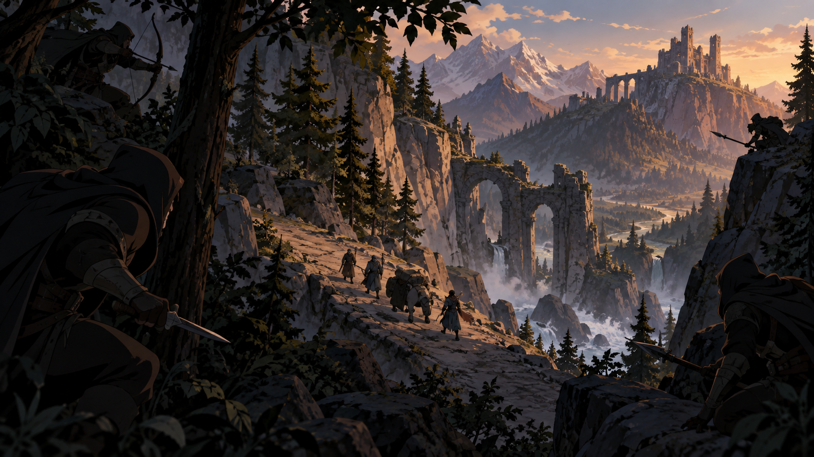
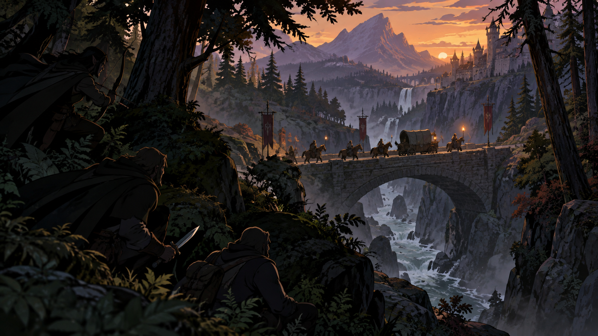
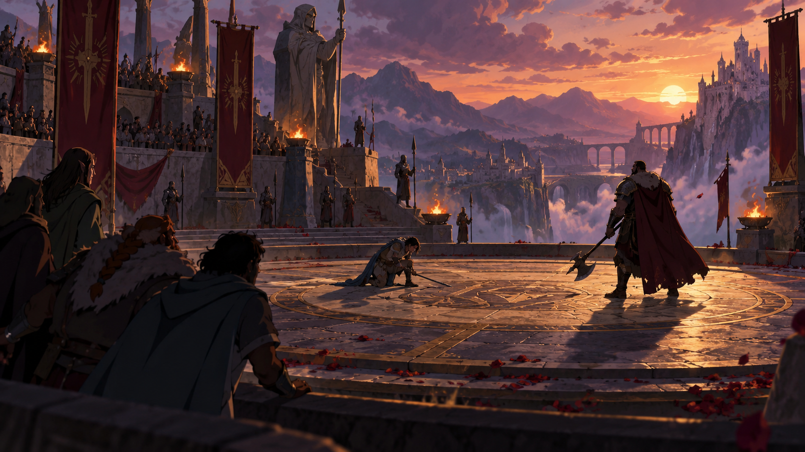
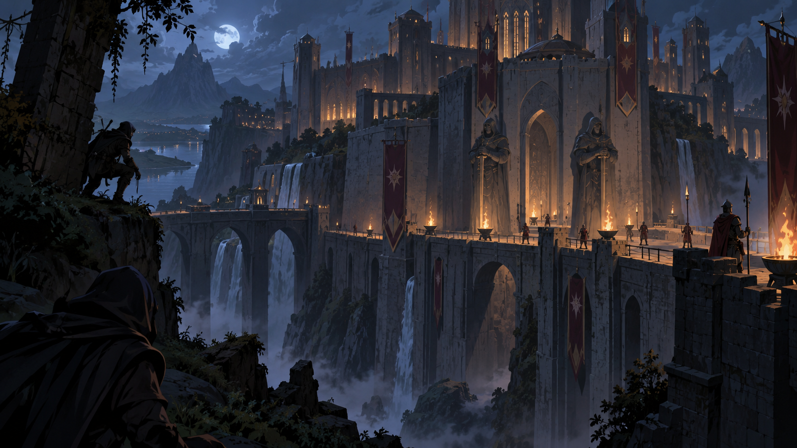
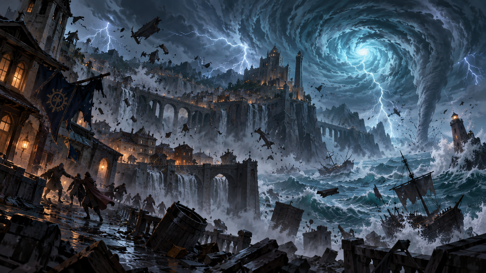

Bosque Abandonado
Abandoned Grove · Tier 1
47/47 paisagens · clique para abrir a imagem completa.
Abandoned Grove · Tier 1

Abandoned Mine · Tier 1

Alchemist's Abandoned Workshop · Tier 1

Ambushed · Tier 1

Ambushers · Tier 1

Archmage's Tower · Tier 3

Astral Realm · Tier 3

Beach Day · Tier 2

Burning Heart of the Woods · Tier 3

Bustling Marketplace · Tier 1

Castle Siege · Tier 3

Chaos Realm · Tier 4

Cliffside Ascent · Tier 1

Convergence, The City Of Portals · Tier 4

Corrupted Swamp · Tier 1

Crystal Wasteland · Tier 3

Cult Ritual · Tier 2

Cursed Graveyard · Tier 1

Deadly Dungeon · Tier 2

Divine Usurpation · Tier 4

Dragon's Lair · Tier 3

Duel · Tier 2

Grand Feast · Tier 1

Hallowed Temple · Tier 2

Haunted City · Tier 2

Heist · Tier 2

Hold The Line · Tier 1

Imperial Court · Tier 4

Local Festival · Tier 1

Local Tavern · Tier 1

Masquerade Ball · Tier 2

Megastorm · Tier 3

Moon Kingdom · Tier 4

Mountain Pass · Tier 2

Necromancer's Ossuary · Tier 4

Ocean Voyage · Tier 2

Outpost Town · Tier 1

Pitched Battle · Tier 3

Raging River · Tier 1

Raiding Party · Tier 1

Realm Of The Dead · Tier 4

Sunken Citadel · Tier 3

Time Court · Tier 4

Upscale Casino · Tier 3

Vast Desert · Tier 2

Volcanic Eruption · Tier 3

Witch's Hut · Tier 2